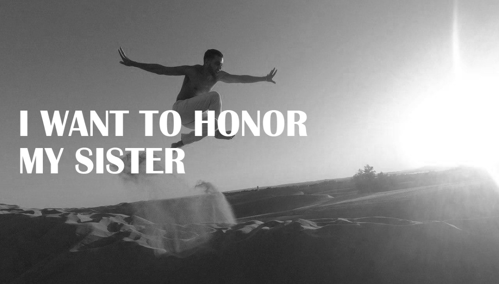
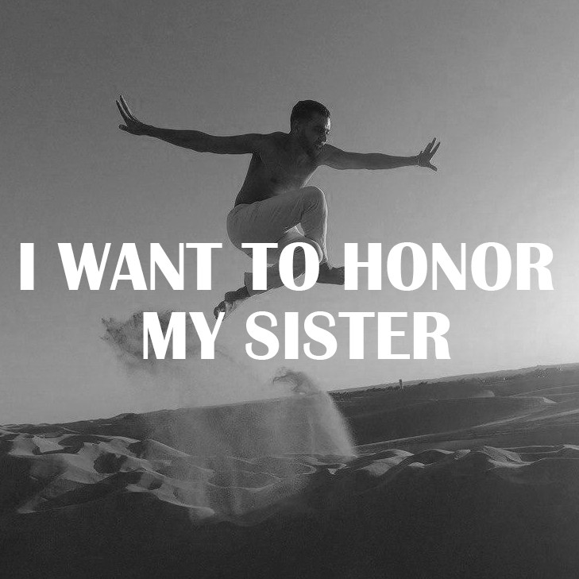

“I want to honor my sister”
Narrative performance with live music, video, and contemporary dance expressions by Tamara Maksymenko.
The performance is based on a real story of one wizened man. Peal Rostman was born a nomad. His roots are found in the Bewlie tribe from Genjjewan area in Kurdish mountains between Iran and Iraq. There was not a single trace of civilization where Peal grew up. There were no buildings, no schools or shops, not even roads or electricity. In Genjjewan the nomads and the stars are brothers and sisters, they sleep together under the same sky. The roosters are alarm clocks, the sunrise marks the stars of each day, and the horizon over the mountaintops outlines the shape between Earth and Sky.
“I want to honor my sister” is an unique live story of Peal´s life, where he is telling to his sister, who was murdered by her father, when she was a few days old. He is telling her about this World, about the wanderings that ended in “civilization”, about abuse and violence, about the war and liberation movement he ended up in. He is telling how 30 years ago life forced him away from his Land because of aggressive attack from Iraq, and how he was walking, boating, sometimes crawling for three years before reached Sweden. He is telling how he fell into depression in a glittering civilization, and about an intellectual world around us. He is telling about longing for Love in the chest, forgiveness and much more…
Peal is a Swedish citizen for 25 years already, and now he is ready to share his story.
“I want to honor my sister” is a performance of the verbal narration from Peal´s mouth, supported by live music and vocal. Dancers will express Peal´s feelings by body language in abstract way on the stage and in the video shots.
Art-director/creator - Tamara Maksymenko
Performer - Peal Rostman
Music - Baiba Dekena
Work on the text - Adam E Hilton
Video/dance: Bihamo Madlate, Tamara Maksymenko. Project based on the real story of Peal Rostman.
WORK IN PROGRESS